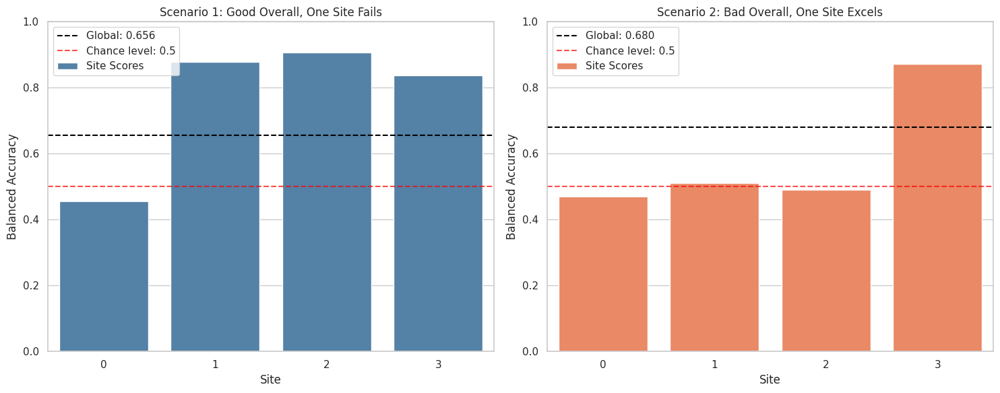

Discover biases in metrics by site.#
uniharmony allows you to stratify the performance metrics by site, unraveling hidden patterns. In this example, we will not simulate site effects.
# Imports
import matplotlib.pyplot as plt
import numpy as np
import seaborn as sns
from sklearn.linear_model import LogisticRegression
from sklearn.metrics import balanced_accuracy_score
from sklearn.model_selection import train_test_split
from uniharmony import verbosity
from uniharmony.datasets import make_multisite_classification
from uniharmony.metrics import report_metric_by_site
sns.set_theme(style="whitegrid")
verbosity("error")
clf = LogisticRegression()
Let’s create the first Scenario: a dataset with 3 good sites and 1 bad site (signal strength = 0) to show the effect of having a bad site in the dataset#
n_bad_sites = 1
X_bad, y_bad, sites_bad = make_multisite_classification(n_sites=n_bad_sites, signal_strength=0, site_effect_strength=0)
# Used to simulate "good" sites
signal_strength = 1
X_good, y_good, sites_good = make_multisite_classification(n_sites=3, signal_strength=signal_strength, site_effect_strength=0)
# Increase site labels for good sites to avoid overlap with bad sites
sites_good = sites_good + n_bad_sites
X = np.concatenate([X_bad, X_good], axis=0)
y = np.concatenate([y_bad, y_good], axis=0)
sites = np.concatenate([sites_bad, sites_good], axis=0)
X_train, X_test, y_train, y_test, sites_train, sites_test = train_test_split(X, y, sites)
clf.fit(X_train, y_train)
y_pred_s1 = clf.predict(X_test)
metric_s1 = report_metric_by_site(y_test, y_pred_s1, sites_test, balanced_accuracy_score, overall_performance=True)
print(f"Overall bACC for Scenario 1: {metric_s1['overall']:.3}")
Overall bACC for Scenario 1: 0.656
Now let’s create a second Scenario: a dataset with 3 bad sites and 1 good site (signal strength = 1)#
n_bad_sites = 3
X_bad, y_bad, sites_bad = make_multisite_classification(n_sites=n_bad_sites, signal_strength=0, site_effect_strength=0)
# Used to simulate "good" sites
signal_strength = 1
X_good, y_good, sites_good = make_multisite_classification(n_sites=1, signal_strength=signal_strength, site_effect_strength=0)
# Increase site labels for good sites to avoid overlap with bad sites
sites_good = sites_good + n_bad_sites
X = np.concatenate([X_bad, X_good], axis=0)
y = np.concatenate([y_bad, y_good], axis=0)
sites = np.concatenate([sites_bad, sites_good], axis=0)
X_train, X_test, y_train, y_test, sites_train, sites_test = train_test_split(X, y, sites)
clf.fit(X_train, y_train)
y_pred_s2 = clf.predict(X_test)
metric_s2 = report_metric_by_site(y_test, y_pred_s2, sites_test, balanced_accuracy_score, overall_performance=True)
print(f"Overall bACC for Scenario 2: {metric_s2['overall']:.3}")
Overall bACC for Scenario 2: 0.68
Let’s plot the results obtained in the each site#
sites_unique = np.unique(sites)
# Extract global performance for both scenarios
metric_global_s1 = metric_s1.pop("overall")
metric_global_s2 = metric_s2.pop("overall")
# Visualize both scenarios
fig, axes = plt.subplots(1, 2, figsize=(15, 6))
######### Scenario 1
site_scores_s1 = [metric_s1[s] for s in sites_unique]
sns.barplot(x=sites_unique, y=site_scores_s1, color="steelblue", label="Site Scores", ax=axes[0])
axes[0].axhline(
metric_global_s1,
color="black",
linestyle="--",
label=f"Global: {metric_global_s1:.3f}",
)
axes[0].axhline(
0.5,
color="red",
linestyle="--",
alpha=0.7,
label="Chance level: 0.5",
)
axes[0].set_xlabel("Site")
axes[0].set_ylabel("Balanced Accuracy")
axes[0].set_title("Scenario 1: Good Overall, One Site Fails")
axes[0].legend()
axes[0].grid(True, alpha=1, axis="y")
axes[0].set_ylim([0, 1])
############# Scenario 2
site_scores_s2 = [metric_s2[s] for s in sites_unique]
sns.barplot(x=sites_unique, y=site_scores_s2, color="coral", label="Site Scores", ax=axes[1])
axes[1].axhline(
metric_global_s2,
color="black",
linestyle="--",
label=f"Global: {metric_global_s2:.3f}",
)
axes[1].axhline(
0.5,
color="red",
linestyle="--",
alpha=0.7,
label="Chance level: 0.5",
)
axes[1].set_xlabel("Site")
axes[1].set_ylabel("Balanced Accuracy")
axes[1].set_title("Scenario 2: Bad Overall, One Site Excels")
axes[1].legend()
axes[1].set_ylim([0, 1])
plt.tight_layout()
plt.show()
